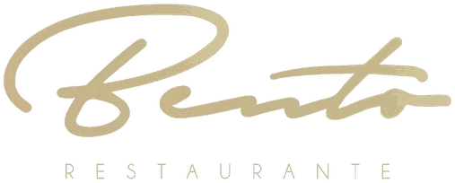

Digite ao menos 2 letras.
Valores mês a mês (Jun/25 → Mai/26).
Bento — painel geralBento — completo, produto a produtoPortal do Bar · Bento · atualizado em 26/09/2026. Gerado automaticamente por bento/portal_gen.py — não editar este arquivo à mão.